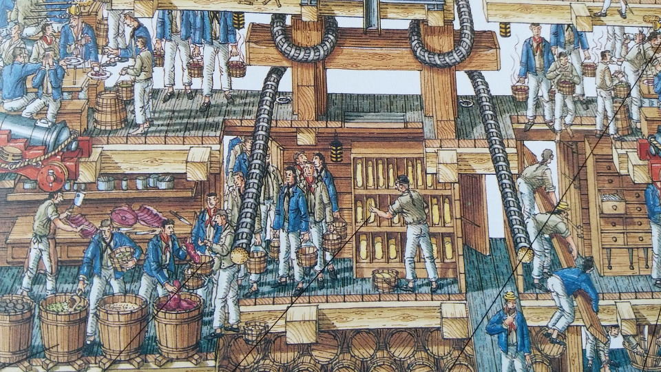
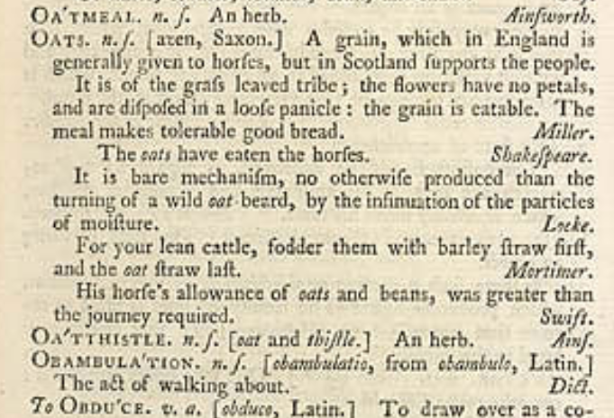
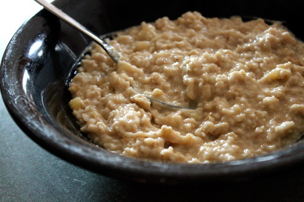
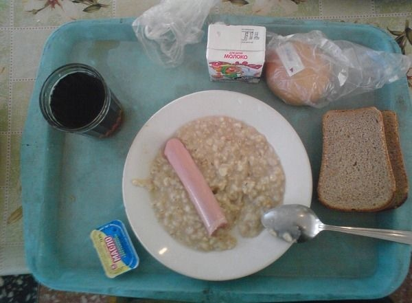
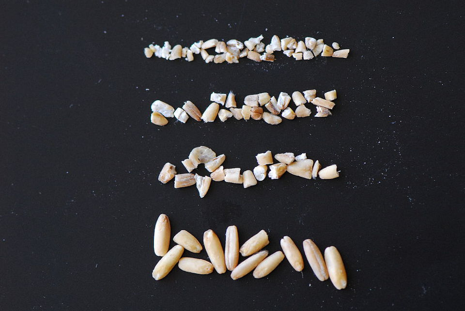
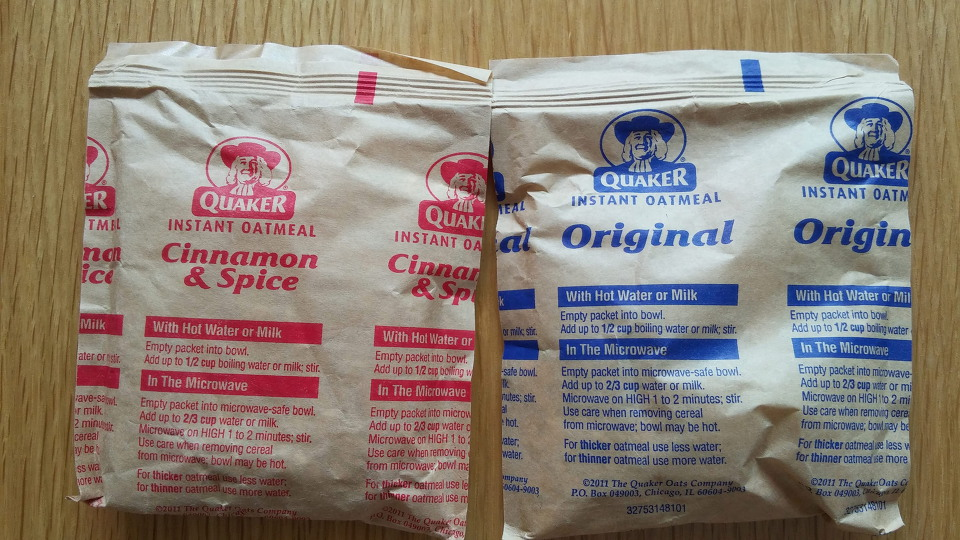
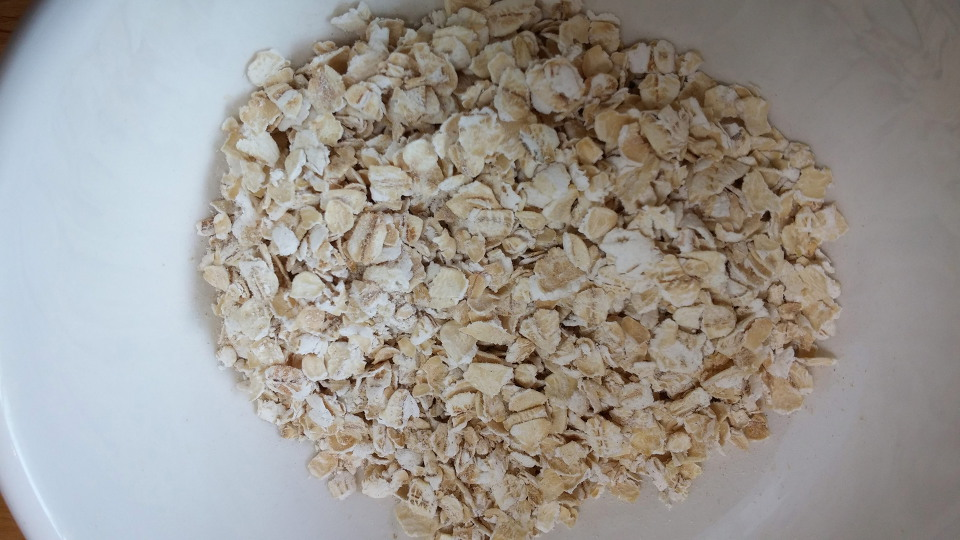
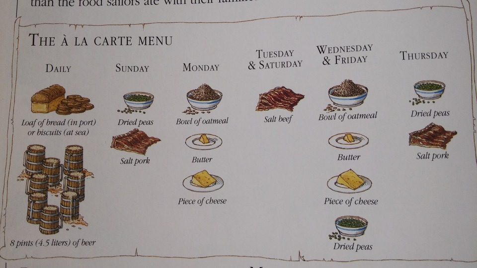

영국에서는 말이, 스코틀랜드에서는 사람이 먹는 곡식
게시: 2018-11-01T06:30:00+09:00
Sharpe's Trafalgar by Bernard Cornwell (배경 : 1805년 인도양 무역선 상) -----------------------------
아침식사는 매일 오전 8시였다. 3등실의 승객들은 종종 그룹으로 나뉘어, 각 그룹 내에서 당번을 정해 앞갑판(forecastle) 쪽에 있는 주방으로부터 버구(burgoo) 한단지를 가져왔다. 버구라는 것은 오트밀 죽에 밤새 주방 난로에서 고기를 삶을 때 나온 쇠고기 기름 조각을 섞은 것이었다. 점심은 정오에 있었는데, 이 때의 메뉴도 역시 버구였다. 다만 점심 때의 버구에는 좀 탄데다 덩어리진 오트밀에 좀더 큰 고기 조각 또는 질긴 말린 생선 조각이 섞여 나왔다. 일요일에는 소금에 절인 생선과 돌처럼 딱딱한 건빵이 나왔는데, 건빵은 바구미 투성이어서 탁탁 두들겨 벌레를 빼내야 했다.
비스킷은 끊임없이 씹어야 했는데, 마치 벽돌을 으깨는 것 같은 느낌이었고, 건빵을 두들길 때 빠져나오지 못한 벌레가 이따금씩 씹혀서 색다른 맛을 내기도 했다. 차는 오후 4시에 제공되었으나, 이는 배 고물 쪽의 1등실 승객들에게만 제공되었고, 3등실 승객들은 저녁 때가 되기를 기다려야 했는데, 그 메뉴도 그저 말린 생선에 비스킷, 그리고 벌레 구멍이 숭숭 뚫린 딱딱한 치즈였다.
The Happy Return by C. S. Forester (배경 : 1808년, 영국 프리깃함 HMS Lydia 함상) -------------------------------
혼블로워 함장이 갑판 아래로 내려가니, 급사인 폴휠이 아침식사를 준비해놓고 기다리고 있었다.
"커피와 버구입니다, 함장님." 폴휠이 말했다.
혼블로워는 식탁에 앉았다. 지난 7개월 간 항해를 하다보니, 사품이라고 할만 한 식량은 다 바닥이 난 상태였다. 커피는 까맣게 태운 빵을 우려낸 물에 불과했고, 그 맛에 대해 말할 수 있는 것은 그냥 달고 뜨겁다는 것 뿐이었다. 버구라는 것은 해군용 비스킷을 으깬 것과 잘게 썬 염장 쇠고기를 섞어 만든, 맛있기는 하지만 뭐라 형용할 수 없는 모양새의 잡탕죽 같은 것이었다.
혼블로워는 멍한 마음므로 아무 생각없이 식사를 했다. 왼손으로는 해군용 비스킷을 테이블에 계속 두들겼는데, 그래야 그가 버구를 다 먹을 때 즈음해서는 비스킷 속에 든 바구미들이 다 밖으로 기어 나올 것이기 때문이었다.
-----------------------------------------------

(Stephen Biesty의 "Cross-sections : Man-of-War" 라는 책이 여전히 아마존에서 중고품으로 팔리고 있더군요. 아주 반갑게 샀습니다. 저도 잘 몰랐던 부분, 가령 저렇게 배식받은 쇠고기는 식사조 mess별로 금속제 꼬리표를 붙여 삶았다는 것도 상세하게 소개되더군요.)
위에서 나오는 음식인 버구에 대해서는 이미 저 소설 본문에 자세히 설명이 되어 있으므로 더 자세한 설명은 피하겠습니다. 참고로 버구라는 것은 미국 요리에도 있는, 일종의 스튜 같은 것이라고 합니다.
오늘 주제는 저 버구가 아니고 버구를 만들 때 쓴 곡식인 귀리입니다.
귀리라는 이름이 있는 것을 보면 우리나라에서도 예전에 귀리 농사를 짓기는 했던 것 같습니다만, 귀리하면 뭐니뭐니해도 스코틀랜드를 떠올리지 않을 수 없습니다. 저도 고딩 때 성문종합영어인가 무슨 책에선가 본 기억이 있는데, 영국인이 스코틀랜드인을 멸시하며 이런 이야기를 하는 장면이 나오지요.
"영국에서는 귀리는 말에게나 주는 사료 같은 건데, 스코틀랜드 사람들은 그걸 먹고 산다지 ?"
그러자 스코틀랜드인이 이렇게 대꾸합니다.
"그래서 영국에서는 좋은 말이 나고, 스코틀랜드에서는 좋은 사람이 나는 거야."
그런데, 이게 단순히 지어낸 이야기는 아니더군요. 실제로 1755년 사뮤엘 존슨 (Samuel Johnson)이라는 사람이 런던에서 발행한 영어 사전 (Dictionary of the English Language)을 보면, 귀리 (oat)에 대해 이렇게 묘사를 하고 있습니다.
OATS. n.s. [?, Saxon] A grain, which in England is generally given to horses, but in Scotland supports the people.
It is of the grass leaved tribe; the flowers have no petals, and are disposed in a loose panicle: the grain is eatable. The meal makes tolerable good bread.

즉, 귀리라는 곡식에 대한 정의를 "영국에서는 일반적으로 말이, 스코틀랜드에서는 사람이 먹는 곡물" 이라고 내린 것입니다. 이런 경멸에 가득찬 묘사가 사전에 버젓이 나오는 것을 보면, 왜 스코틀랜드가 최근 독립하겠다고 난리법석을 피웠는지 이해가 갑니다. 그쪽도 변화를 바라지 않는 노년층의 투표가 상황을 결정지은 모양입니다.
그런데 스코틀랜드에서는 왜 밀 대신 귀리를 먹었을까요 ? 아일랜드에서 감자를 주식으로 했던 것은 영국인들의 토지 수탈 때문인 탓이 컸지만, 스코틀랜드의 사정은 그와는 약간 달랐습니다, 스코틀랜드의 햇볕이 안 좋고 날씨가 추운 기후에서는 밀 농사가 잘 안되어, 척박한 그런 기후에서도 잘 자라는 귀리를 주식으로 삼아야 했던 것입니다.
다만, 저 위에서 영국인과 스코틀랜드인이 나눈 대화에서처럼, 실제로 밀보다 귀리가 훨씬 건강에 좋은 음식이라는 것은 (이제는) 널리 알려진 사실입니다. 귀리는 10대 수퍼 푸드로 뽑히는 영광을 누리기도 했지요. 특히, 귀리에는 밀이나 보리, 호밀과는 달리 글루텐이 거의 없어 요즘처럼 '글루텐-프리'가 뭔가 멋진 단어로 보이는 시대에 더욱 인기를 누리고 있습니다.
하지만 저렇게 글루텐이 없다는 점 때문에, 귀리는 과거에는 더욱 천대를 받아야 했습니다. 저 존슨 사전에는 귀리 가루로 tolerable good bread를 만들 수 있다고 했지만, 글루텐이 없는 곡식 가루로는 반죽 모양이 나오지도 않고 발효에 의한 부풀기도 잘 안되므로, 순수 귀리만으로는 빵을 못 만들기 때문입니다.
그러다보니, 귀리는 빵보다는 주로 죽으로 먹어야 했습니다. 흔히 말하는 오트밀(oatmeal)이라는 것은 영어 단어 그대로 번역하면 귀리가루라는 뜻입니다. Meal이라는 단어는 식사라는 뜻 외에 가루라는 뜻이 있거든요. 맛없는 요리로 악명높은 영국인들도 아침 식사만큼은 괜찮은 것을 먹습니다. 베이컨, 달걀 프라이, 소시지, 버섯, 콩 등을 아주 푸짐하게 먹지요. 18~19세기 당시 영국 서민들이 그런 기름진 식사를 할 수 있었던 것들은 물론 아닙니다만, 영국인들의 그런 아침 식사와 스코틀랜드인들의 초라한 귀리가루 죽이 비교되는 것은 사실입니다.

(뭔가 곡식 이름에 ~meal이라는 것이 붙으면 그 곡식의 가루를 뜻하는 것입니다. 가령 보리가루는 barleymeal이지요. 오트밀은 귀리가루 자체를 뜻하기도 하지만 거칠게 간 귀리 가루를 물이나 우유에 넣고 끓인 요리를 말하기도 합니다. 회색빛이 나고, 맛도 없습니다. 여기에 설탕을 잔뜩 넣으면 좀 먹을 만 해집니다.)
여러분은 죽 좋아하십니까 ? 저는 싫어합니다. 누가 뭐래도, (새우나 전복 같은 비싼 재료를 넣은 것도 있지만) 죽은 그다지 맛이 있는 음식이 아니라 배를 채우기 위한 음식이니까요. 그래서인지, 귀리 죽을 많이 먹는 나라들은 우크라이나나 러시아, 북유럽 등 과거 살림살이가 그다지 좋지 않았던 나라들입니다. 죽은 더 많은 머릿수를 먹이기 위해서는 그냥 '물만 좀 더 부으면 된다'는 점 외에도, 가난한 사람들에게 편리한 점이 하나 더 있습니다. 바로 제분입니다.

(러시아군 식사라고 인터넷에 떠도는 사진입니다. 진짜 여부는 저도 잘 모르겠습니다.)
빵은 제조 과정이 복잡하고 힘도 많이 들어갑니다. 반죽도 발효도 오븐에서 굽는 것도 모두 만만치 않은 과정입니다. 그러나 빵을 만들기 위해서는 먼저 곡식으로 가루를, 그것도 아주 고운 가루를 만들어야 합니다. 이 과정에서 적지 않은 비용이 들어갑니다. 집에서 손으로 맷돌을 돌려 빻는 것 정도로는 아주 고운 가루를 내기가 어려웠고, 이렇게 거칠게 간 가루로 만든 빵은 부드럽지 않고 식감이 좋지 않았습니다. 중세 어떤 수도사가 쓴 일지를 보면 "이런 거친 가루로 만든 빵을 먹으면 악마라도 방귀를 뀔 수 밖에 없다" 라고 불평하는 장면이 나오기도 합니다. 그런 점을 이용해서 중세 유럽의 영주들은 장원의 물레방아 또는 풍차로 된 제분소를 장악하고 제분 과정에서 짭짤한 세금을 뜯었지요.
이렇게 모든 곡식을 가루로 만들어야 비로소 먹을 수 있다고 생각하는 유럽인들의 사고 방식 때문에, 전혀 뜻밖의 일이 벌어지기도 했습니다. 가령 이집트를 침공한 나폴레옹군이 침공 초기에 마을마다 밀이 산더미처럼 쌓여 있는데도 방앗간이 없어서 굶어야 하는 상황이 발생하기도 했던 것입니다. 또 19세기 중반 아일랜드 감자 잎마름 병에 의한 대기근이 발생했을 때, 당시 영국 수상이었던 필(Sir Robert Peel) 경이 미국으로부터 10만 파운드 상당의 옥수수를 대량 구매하여 구호 식품으로 보낸 적이 있었습니다. 그러나, 이 미국산 옥수수는 단단하게 마른 옥수수 알갱이었는데, 아일랜드에서는 이를 가루로 만들 제분소가 충분치 않아서 이를 제분하는 사이 많은 사람들이 또 굶어죽어야 했습니다.

(아무래도 귀리는 낟알이 너무 길어서, 죽이라도 끓여먹으려면 좀 자르고 빻아서 잘게 부술 필요가 있습니다. 이는 steel-cut 처리된 귀리 낟알입니다.)
하지만 귀리는 이렇게 곱게 갈 필요까지는 없었습니다. 어차피 죽을 끓여 먹을 거니까요. 요즘 나오는 인스턴트 오트밀을 보면 그 사실이 좀더 명백해집니다. 제가 코스트코에서 가끔 사먹는 Quaker Instant Oatmeal을 보면 거칠게 부순 귀리 낱알을 압착 처리해서, 좀더 쉽게 물이나 우유를 흡수하도록 만들었습니다. (그래도 끓이지 않고 차가운 상태에서 완전히 부드럽게 만들어 먹으려면 5분 정도로는 택도 없고 적어도 1시간 이상 물이나 우유를 부어 놓아야 합니다. 저는 전날밤에 우유를 부어 놓습니다. 그러면 다음날 아침 뮤즐리 비슷하게 됩니다.)


(코스트코에서 파는 인스턴트 오트밀입니다. 역시 오리지널 맛은 좀 그렇고, 단풍나무 시럽이나 갈색 설탕이 든 것은 그나마 먹을만 합니다. 가격은 의외로 무척 비쌉니다.)
영국인들은 귀리를 먹지 않았는가 하면 또 그렇지가 않습니다. 당연히 먹었고, 저 위 소설에서 언급했듯이, 영국 해군에서도 오트밀을 배식했습니다. 혼블로워나 오브리 시리즈에는 염장 쇠고기 이야기가 하도 많이 나와서 영국 해군은 매일 쇠고기를 먹나 보다 싶습니다만, 사실 정확하게는 쇠고기는 일주일에 딱 두번 나왔습니다. 돼지고기도 두번 나왔고, 나머지 3일, 정확하게 월수금요일에는 아예 고기가 안 나오고 오트밀에 버터, 치즈가 조금 나왔습니다.

(역시 Stephen Biesty의 "Cross-sections : Man-of-War" 중 일부입니다. 영국 수병들 배식표를 보면, 맛없는 함상 식사 중에서도 월,수,금요일은 특별히 더 우울한 날이었을 것 같습니다.)
요즘 귀리는 그 보습성 때문에 화장품 원료로도 쓰이고, 또 건강식으로 큰 인기를 끌고 있습니다. 하지만 이런 귀리의 인기는 새로운 것이 아닙니다. 미국에서는 이미 1980년대에 건강식이라는 이유로 큰 인기를 끌어, 귀리겨를 섞은 포테이토칩이 나오기도 할 정도였습니다. 그러나 역시 귀리의 꺼끌꺼끌하고 질긴 식감은 인기가 없었는지 불과 5년도 안되어 그 인기는 사그라들고 말았습니다. 그러다 다시 FDA나 이런저런 유명 기관에서 '귀리가 건강에 좋다' 라고 발표를 하면 다시 반짝 인기를 얻는 패턴이 반복되고 있다고 합니다.
저희집에서도 요즘 밥에 귀리를 섞어 먹는데, 우리 식구들 입맛에는 잘 맞습니다. 가격이 무척 비쌀 것이라고 생각했는데, 캐나다산 수입품이라서 그런지 그냥 쌀과 비슷한 가격이더군요.